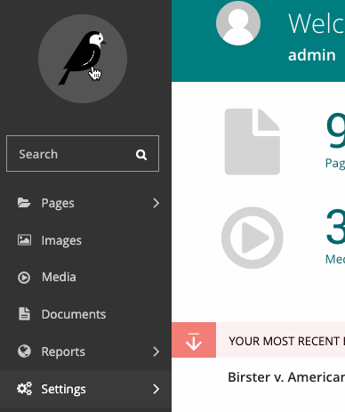
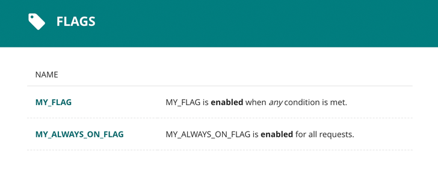
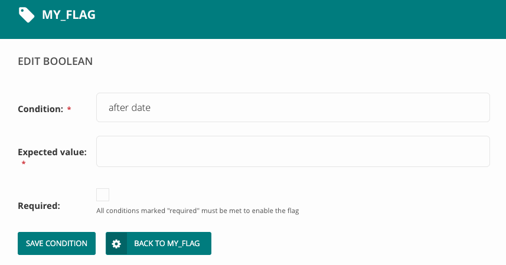

Feature flags
Feature flags are implemented using our Wagtail-Flags app. The README contains an overview and examples of how to use feature flags in Wagtail.
This document covers how to add and use feature flags with cfgov-refresh and the conventions we have around their use.
Adding a flag
Feature flags are defined in code in the cfgov/settings/base.py file as part of the FLAGS setting. Each flag consists of a single string and a Python dictionary ({}) of its hard-coded conditions (see Enabling a flag below).
FLAGS = {
# Beta banner, seen on beta.consumerfinance.gov
# When enabled, a banner appears across the top of the site proclaiming
# "This beta site is a work in progress."
'BETA_NOTICE': {},
}
By convention our flag names are all uppercase, with underscores instead of whitespace. A comment is expected above each flag with a short description fo what happens when it is enabled.
Checking a flag
Flags can be checked either in Python code or in Django or Jinja2 template files. See the full Wagtail Flags API is documented for more information.
In templates
Jinja2
Most of cfgov-refresh's templates are Jinja2. In these templates, two template functions are provided, flag_enabled and flag_disabled. Each takes a request object as its first argument and flag name as the second.
flag_enabled(request, 'MY_FLAG') will return True if the conditions under which MY_FLAG is enabled are met.
flag_disabled(request, 'MY_FLAG') will return True if the conditions under which MY_FLAG is enabled are not met.
See Enabling a flag below for more on flag conditions.
An example is the BETA_NOTICE flag as implemented in header.html:
{% if flag_enabled(request, 'BETA_NOTICE') and show_banner %}
<div class="m-global-banner">
<div class="wrapper
wrapper__match-content
o-expandable
o-expandable__expanded">
<div class="m-global-banner_head">
<span class="cf-icon
cf-icon-error-round
m-global-banner_icon"></span>
This beta site is a work in progress.
</div>
…
</div>
</div>
{% endif %}
Django
In Django templates (used in Satellite apps and the Wagtail admin), two template functions are provided flag_enabled and flag_disabled once the feature_flags template tag library is loaded.
flag_enabled 'MY_FLAG' will return True if the conditions under which MY_FLAG is enabled are met.
flag_disabled 'MY_FLAG' will return True if the conditions under which MY_FLAG is enabled are not met.
See Enabling a flag below for more on flag conditions.
The BETA_NOTICE Jinja2 example above when implemented with Django templates would look like this:
{% load feature_flags %}
{% flag_enabled 'BETA_NOTICE' as beta_flag %}
{% if beta_flag and show_banner %}
<div class="m-global-banner">
<div class="wrapper
wrapper__match-content
o-expandable
o-expandable__expanded">
<div class="m-global-banner_head">
<span class="cf-icon
cf-icon-error-round
m-global-banner_icon"></span>
This beta site is a work in progress.
</div>
…
</div>
</div>
{% endif %}
In code
In Python code three functions are available for checking feature flags, flag_state, flag_enabled, and flag_disabled. The Python API is slightly different from the Jinja2 or Django template API, in that flag conditions can take more potential arguments than requests, and thus flags are more flexible when checked in Python (in and outside a request cycle).
See the Wagtail Flags flag state API documentation for more.
Additionally two decorators, flag_check and flag_required, are provided for wrapping views (and another functions) in a feature flag check. See the Wagtail Flags flag decorators API documentation for more.
In URLs
There are two ways to flag Django URL patterns in urls.py: with flagged_url() in place of url() for a single pattern, or with the flagged_urls() context manager for multiple URLs.
flagged_url(flag_name, regex, view, kwargs=None, name=None, state=True, fallback=None) works exactly like url() except it takes a flag name as its first argument. If the flag's state matches the given state, the URL pattern will be served from the given view; if not, and fallback is given, the fallback will be used.
An example is our WAGTAIL_ABOUT_US flag:
flagged_url('WAGTAIL_ABOUT_US',
r'^about-us/$',
lambda req: ServeView.as_view()(req, req.path),
fallback=SheerTemplateView.as_view(
template_name='about-us/index.html'),
name='about-us'),
Ignoring the view being a lambda for now (see Flagging Wagtail URLs below), this URL will be served via Wagtail if WAGTAIL_ABOUT_US's conditions are True, and from a TemplateView if its conditions are False.
If you need to flag multiple URLs with the same flag, you can use the flagged_urls() context manager.
with flagged_urls(flag_name, state=True, fallback=None) as url provides a context in which the returned url() function can be used in place of the Django url() function in patterns and those patterns will share the same feature flag, state, and fallback.
An example is our WAGTAIL_ASK_CFPB flag:
with flagged_urls('WAGTAIL_ASK_CFPB') as url:
ask_patterns = [
url(r'^(?i)ask-cfpb/([-\w]{1,244})-(en)-(\d{1,6})/?$',
view_answer,
name='ask-english-answer'),
url(r'^(?i)obtener-respuestas/([-\w]{1,244})-(es)-(\d{1,6})/?$',
view_answer,
name='ask-spanish-answer'),
…
]
urlpatterns += ask_patterns
Warning
Do not attempt to use flag_check or any flag state-checking functions in urls.py. Because they will be evaluated on import of urls.py they will attempt to access the Django FlagState model before it is ready and will error.
Flagging Wagtail URLs
Wagtail views in flagged_url with a Django view as fallback (or vice-versa) can be a bit awkward. Django views are typically called with request as the first argument, and Wagtail's serve view takes both the request and the path. To get around this, in flagged_url we typically use a lambda for the view:
lambda req: ServeView.as_view()(req, req.path)
This lambda takes the request and calls the Wagtail-Sharing ServeView (which we're using in place of wagtail.wagtailcore.views.serve).
Enabling a flag
Feature flags are enabled based on a set of conditions that are given either in the Django settings files (in cfgov/cfgov/settings/) or in the Django or Wagtail admin. Multiple conditions can be given, both in settings and in the admin, and if any condition is satisfied a flag is enabled.
A list of available conditions and how to use them is available in the Wagtail-Flags documentation.
Hard-coded conditions
Conditions that are defined in the Django settings are hard-coded, and require a change to files in cfgov-refresh, a new tagged release, and new deployment to change. These conditions should be used for flags that are relatively long-lasting and that can require a round-trip through the release and deployment process to change.
When adding a flag to the Django settings the flag's dictionary of conditions can contain a condition name and value that must be satisfied for the flag to be enabled. The nature of that value changes depending on the condition type. See the Wagtail-Flags conditions documentation for more on individual conditions.
There is a simple boolean condition that is either True or False, and if it is True the flag is enabled and if it is False the flag is disabled. If we want to always turn the BETA_NOTICE flag on in settings with a boolean condition, that would look like this:
FLAGS = {
# Beta banner, seen on beta.consumerfinance.gov
# When enabled, a banner appears across the top of the site proclaiming
# "This beta site is a work in progress."
'BETA_NOTICE': {
'boolean': True,
},
}
Database conditions
Conditions that are managed via the Wagtail or Django admin are stored in the database. These conditions can be changed in real-time and do not require any code changes or release and deployment to change (presuming the code that uses the feature flag is in place).
To view, delete, and add database conditions, navigate to "Settings > Flags" in the Wagtail admin.

Once in the flag settings, you'll have a list of all flags and their conditions..

Database conditions can be deleted with the trash can button on the right.
To create a new database condition, select "Add a condition". As with hard-coded conditions, to create a database condition you must select which condition type you would like to use and give it a value that must be satisfied for the flag to be enabled.

Database conditions can only be set for flags that exist in the Django settings.
Satellite apps
Feature flags can be used in satellite apps in exactly the same way they are used in cfgov-refresh. An example is the use of a feature flagged template choice in the complaintdatabase app.
Hygiene
Feature flags should be rare and ephemeral. Changes should be small and frequent, and not big-bang releases, and flags that are no longer used and their conditions should be cleaned up and removed from code and the database.